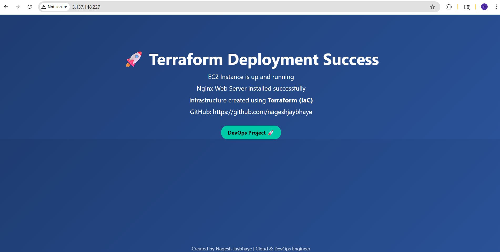
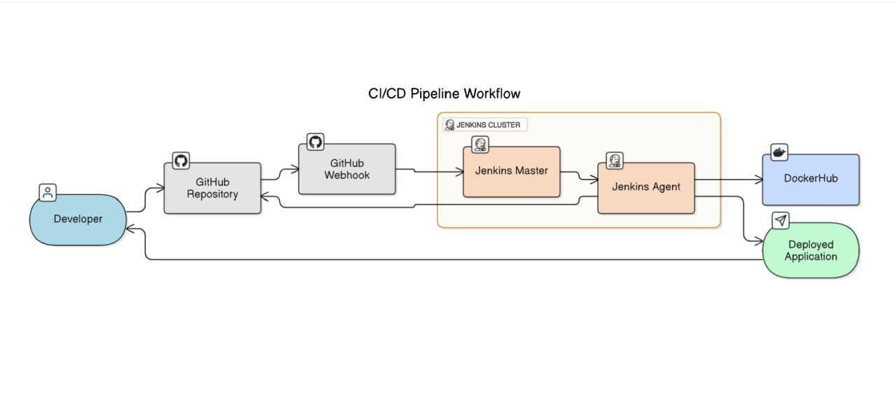
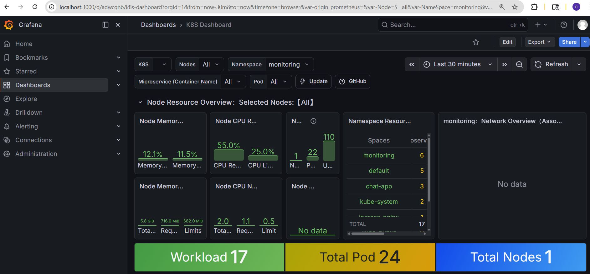
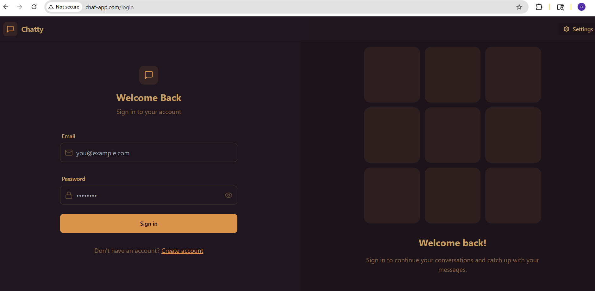

I am a Cloud Engineer with 2 years of experience in AWS, focusing on cloud operations, infrastructure management, monitoring, and automation. I have hands-on experience with EC2, VPC, CI/CD pipelines, Linux systems, and cloud monitoring tools.
Download ResumeOperated and supported AWS cloud environments involving EC2, VPC, IAM, and security groups. Handled day-to-day cloud operations such as instance lifecycle management, access control, and troubleshooting availability and connectivity issues in a production environment.
Implemented and maintained CI/CD pipelines using GitHub Actions to automate build and deployment workflows. Supported development teams by improving deployment consistency, reducing manual steps, and assisting in pipeline troubleshooting.
Monitored Linux-based cloud servers using Grafana and Node Exporter to track system health and performance. Performed Linux administration tasks, log analysis, and resolved performance and resource utilization issues as part of regular cloud operations.
• AWS (EC2, VPC, IAM, Security Groups, ALB, Auto Scaling, CloudWatch, S3, Route 53) • Linux System Administration • Cloud Networking (VPC, Subnets, Routing, Security) • Git & GitHub (Version Control) • CI/CD Automation (GitHub Actions) • Python (Automation & Scripting)

Built AWS infrastructure using Terraform including EC2 Nginx Web Server and S3 bucket provisioning.
Automated setup, configured security groups, and created reusable modules.
Tech Stack: Terraform, AWS, Linux, Nginx
GitHub Repo

Built automated CI/CD pipeline using Jenkins for a Django Notes app with Docker, MySQL, and Nginx.
Implemented full pipeline from GitHub to deployment.
Tech Stack: Jenkins, Docker, Django, MySQL, Nginx
GitHub Repo

Deployed Node.js (Express) app on AWS EC2 with CI/CD using GitHub Actions.
Enabled auto-deployment on every code push with secure SSH setup.
Tech Stack: AWS EC2, Node.js, GitHub Actions, Docker
Live App |
GitHub Repo

Built and deployed a full-stack chat application using Docker & Kubernetes on Minikube with JWT authentication and real-time messaging.
Tech Stack: Kubernetes, Docker, MongoDB, Node.js, React, JWT
GitHub Repo